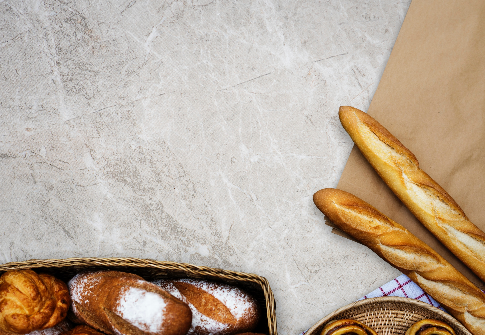

바게트빵(프랑스어: baguette de pain) 또는 간단히 바게트(프랑스어: baguette) 또는 프랑스빵(프랑스어: pain français)은 프랑스에서 만들어진, 구울 때 물을 뿌려(스팀) 겉이 딱딱한 빵의 통칭이다. 바게트란 단어는 프랑스어로 막대기, 지팡이라는 뜻이다. 바게트는 밀가루, 소금, 물, 이스트만으로 만든다. 이러한 재료의 제한은 프랑스에서는 식품법으로 엄격히 규정되어 있다. 만약 이 기본 재료가 아닌 다른 재료를 추가로 사용해서 만든 빵은 바게트라는 이름을 붙이고 판매할 수 없다. 바게트는 굽기전에 반죽에 칼금을 넣고 물을 뿌려 굽는데, 칼금을 넣는 것은 반죽이 부풀며 불규칙하게 터지는 것을 막기 위해서이고, 물을 뿌리는 것은 수분이 증발하며 겉이 딱딱해지게 하기 위해서이다. 오븐에서 구울 때도 오븐 안에 뜨거운 증기를 분사하여 빵 표면에 바게트 특유의 바삭한 질감이 잘 나오도록 한다.